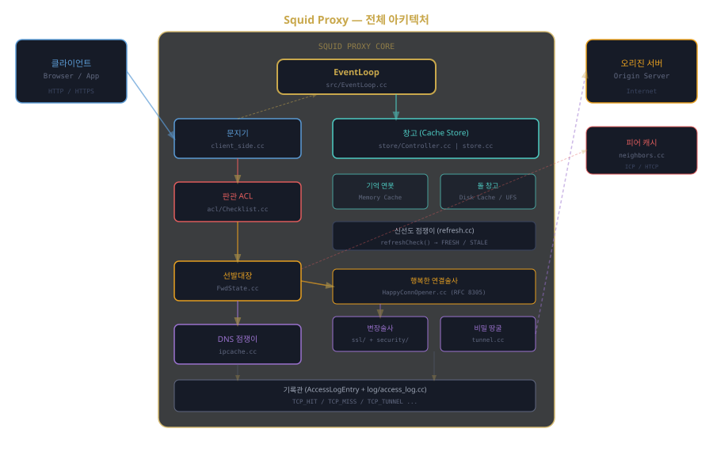

The Squid Proxy source code retold as a five-volume technical novel
A server on a rack in a machine room. From the moment power flows through its circuits, it handles hundreds of thousands of connections, hands down verdicts, hoards memories, and dispatches agents beyond its borders. A kingdom in code. Every character is a real source file, class, or function.

The Birth of the Proxy Kingdom
Everything begins with a single command. The machine opens its eyes, reads the law, starts its heartbeat, and opens the gates to the first visitor.
Read Volume 1 →ACL, Rules, and Verdicts
The request crossed the gate. But even inside there are checkpoints. Judge ACL interrogates every packet. Allow or deny — the law breathes between 0 and 1.
Read Volume 2 →Cache, Memory, and Forgetting
Everything changes after the second visit. The Storekeeper remembers what was already fetched and won't fetch it again. Remembering is the kingdom's strength; forgetting is its wisdom.
Read Volume 3 →Forwarding, Connections, and Tunnels
Cache miss. The Forward Commander steps up. Consults the DNS oracle, shouts to the peer caches, races IPv6 against IPv4, and sometimes digs a secret tunnel.
Read Volume 4 →Logging, Performance, and Squid's Legacy
Everything is recorded. Allows and denials, hits and misses. Thirty years of code, millions of lines, thousands of hands. The kingdom still lives.
Read Volume 5 →